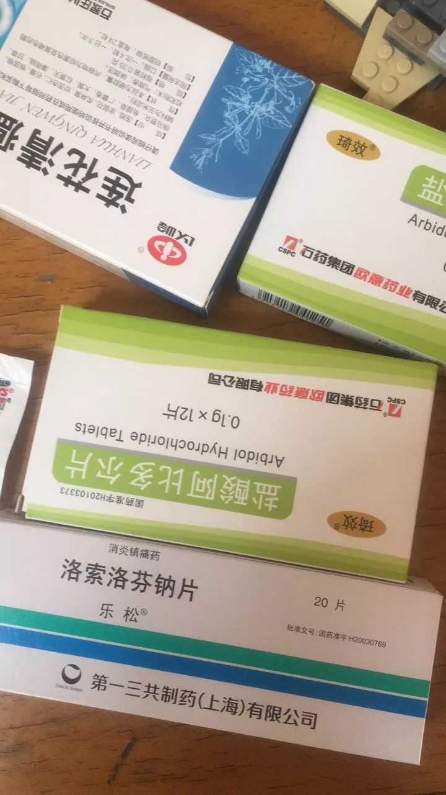
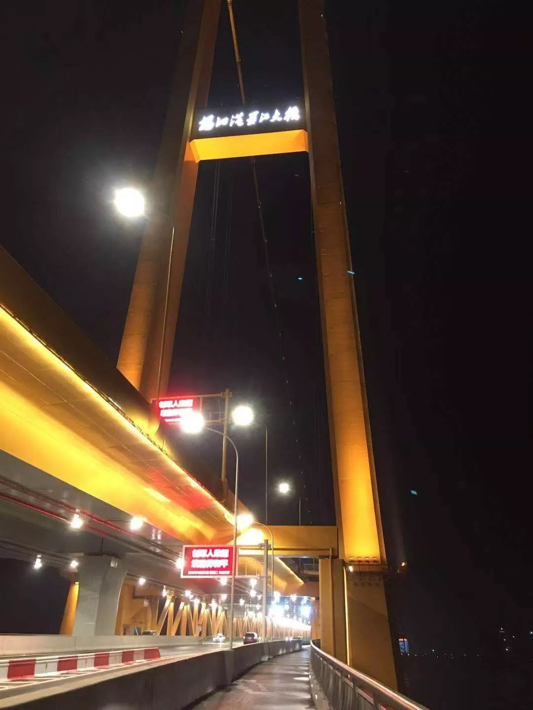

肺炎日记|2月2日：力不从心红会“让路”，双黄连惹质疑
原文链接 备份链接 【财新网】（记者 黄蕙昭 综合）疫情局势仍然严峻。截至2日16时，中国累计确诊病例14489例，死亡304例，疑似病例19544例。湖北地区继续保持高增速：目前，湖北省确诊病例9074例，其中黄冈市累计确诊1002 …

现在武汉那些专门的传染病医院，床位紧张，还有不少人拿着被子铺盖在医院输液，等待入院。我去复查时也看到有类似“一床难求”的情况。我还算是不幸中的万幸吧，自己吃药加上在家隔离就恢复了。
口述 | 余 毅（化名）
整理 | 王仲昀
我叫余毅，今年34岁，老家湖北黄冈，现在是武汉的一名装修工人。此次新冠肺炎疫情爆发后，我觉得自己是一名轻症患者。不过，由于我在医院检查时人满为患，当时检测手段又没到位，我自始至终没有成为确诊病例，即使我出现了一系列典型症状。
感 染
过年前我很忙，1月20日前都在干活。一直忙到1月20日，我开始在家休息。
1月22日上午，因为工作上的事情，我出门坐公交从武昌到汉阳办事。这趟路途比较远，我中间一共转了三次车。其实前两天，我和身边的人也看到了媒体上关于此次疫情的新闻，但我个人抱有侥幸心理，总觉得这个病毒离自己还很远。
当时很多人都已经知道这个事情，但我当天出门，路上的人还是有一半没戴口罩。很多人估计跟我有一样的心态，也有可能是当时口罩确实很难买到了。22日办完事情回家后，本来我跟往年一样要回黄冈老家过年，但第二天（23日）武汉就封城了，我就再也没出门。所以后来自己出现患病症状，就觉得应该是那天出门被感染上的。
检 查
1月24日除夕夜，我和老婆还有两个孩子在家吃完年夜饭后，我身体就开始不舒服。具体表现为发烧、头疼、浑身无力，当时测出来发烧到37.8度。25日吃了消炎药状态又变得正常，我就以为是普通的感冒发热，还没往新冠肺炎去想。但是到26日，我感到症状越来越严重，必须要去医院了。
于是，27日一早我就去了家附近的社区医院拍了片子，显示“左肺下叶多发片状磨玻璃密度增高影”，诊断是“左肺下叶多发感染”。当时，我能感觉到医院里的人很怕我，让我取报告的时候离他们远一点。我觉得我可能是感染了，但我也很理解他们，医生护士才是最辛苦的人。
当天，社区医院建议我立即转去大医院，我就转诊去了华中科大同济医学院附属同济医院的光谷院区，这也是离我比较近的大医院。
那天上午在龙城社区医院，就有三个症状和我差不多的人，后来我们都去了同济医院（光谷院区）。

余毅在社区医院的CT检查报告单
我到了同济医院（光谷院区）的发热门诊后，最直观的感受是人很多，很多是和自己状况差不多的。门诊医生看了之前社区医院的报告后跟我说，你的症状较轻，回家按时吃药，然后自我隔离就行。我在那里没有做检查，包括后来去复诊时也没有检查，所以自始至终我没有被确诊。但从我的症状，到初步检查结果，再到后来同济医院医生给的治疗方案，这些让我觉得我就是感染了新冠肺炎，只是症状比较轻。
出现症状，但最后没有被确诊的绝对不止我一个。当时我在同济医院（光谷院区）看到，医院里有很多比我岁数大而且病情更重的人，有些甚至咳得路都走不好了。这些人也没有床位，他们就坐在走廊里，让医生打针。个人认为，这跟当时核酸检测条件没有跟上有关，现在有没有跟上我也不清楚。另外我还想说，由于没能被确诊，我看病买药的钱都得自费。买一次药大概花了300元左右，两次就是600元，加上其他检查一共将近1000。当然我明白，在这种事情面前，生命肯定是最重要的。不管药多贵，我还是得买。
隔 离
27日从同济医院回家后，我就把自己隔离了。另外，按照医嘱，我每天按时吃药，一共有四种。这样持续几天后，我能感觉到自己在慢慢恢复，症状也不断缓解，到30日已经基本正常。30日那天，我去同济医院（光谷院区）复查，但人还是很多，医生依旧没有给我检查。医生开了同样的药，让我回家继续隔离，直到满14天后再看。

余毅目前服用的药物
我现在和老婆孩子在武汉三环南边龙城路租房住，这边平时人流量就比较大。疫情发生后，我们家的基本生活还是有保障的。附近有一个两层楼的连锁超市，过年期间家人曾经去那里购物，回来说超市里蔬菜鸡蛋都是畅销品，卖得非常快，价格也比平时略高。
我目前精神状态比较乐观，随着症状慢慢改善，生活也逐渐正常。就是工作受到影响，本来正常正月十五以后开工，现在就不清楚了。
在家隔离这段时间，我一个人待在房间里不出来，跟家人的交流就全靠手机，或者有时候在房间里大声地喊几句他们也能听到。吃饭就让老婆把饭放在房门口。我家里有两个孩子，一个10岁，一个7岁。大娃大概明白我的情况，还用手机笑着对我说：“爸爸被隔离了。”
我很想出去在生活上帮帮他们，不过没办法。后来我明白，保护好自己，自我主动隔离，就是对他人最好的保护。好在家人目前都一切正常，没被感染。

余毅拍摄的武汉杨泗港长江大桥
现在武汉那些专门的传染病医院，床位紧张，还有不少人拿着被子铺盖在医院输液，等待入院。我去复查时也看到有类似“一床难求”的情况。我还算是不幸中的万幸吧，自己吃药加上在家隔离就恢复了。
最后，我期待着武汉及全国各地疫情早日结束，大家的生活尽快回归正常。
征集令
《新民周刊》现面向全国征集新冠肺炎采访对象和真实故事：
如果你是参与抗击新冠肺炎疫情的医护人员或其家属，我们希望聆听你的“战疫”故事，也希望传达你的诉求。
如果你是确诊、疑似患者本人或家属，我们希望了解你和家人如何“抗疫”的过程，让外界了解你的真实经历。
如果你是疫情严重地区的普通市民，我们希望展现你的乐观，并倾听你所需的帮助。
如果你是公共服务人员或各类捐助者，我们希望看到你的“最美逆行”，记录下你的无私。
……
抗击新冠肺炎疫情，我们诚征对疫情了解的社会各界人士，提供相关线索，说出你的故事，让我们用新闻留存这一切。
《新民周刊》新冠肺炎线索征集值班编辑联系方式（添加时请简要自我介绍）：
周一：应 琛 微信号：paulineying0127
周二：金 姬 微信号：gepetta
周三：黄 祺 微信号：wxid_bf5mudid7oz322
周四：周 洁 微信号：asyouasyou
周五：孔冰欣 微信号：kbx875055141
周六：吴 雪 微信号：shyshine1105
周日：姜浩峰 微信号：jianggeladandong
新闻是历史的底稿，你们是历史的见证者。期待你的故事、你的线索！

▼
大家还都在看这些
▼
转载请在评论区留言，获得授权！
转载时，须注明作者、出处和微信号


原文链接 备份链接 【财新网】（记者 黄蕙昭 综合）疫情局势仍然严峻。截至2日16时，中国累计确诊病例14489例，死亡304例，疑似病例19544例。湖北地区继续保持高增速：目前，湖北省确诊病例9074例，其中黄冈市累计确诊1002 …
原文链接 备份链接 封城时间终于进入了两位数，医疗资源紧张的情况依然不见显著改善。 昨天「财经」发的稿子内容触目惊心，以武汉的一家定点医院为例，120个发热病人，大约平均会有80人被诊断为肺部感染，其中又只有5人能够「幸运」的被收治住院， …
原文链接 备份链接 编者按： 8天时间，一座可容纳1000张床位的医院正式落成。这就是参照2003年非典期间北京小汤山医院所建的火神山医院。明天，这所医院就将收治病人。 据悉，该医院主要救治确诊患者，开设重症监护病区、重症病区、普通病区， …
原文链接 备份链接 03.02.2020本文字数：2583，阅读时长大约4.5分钟 导读：随着疫情扩散，确诊和疑似病患增多，病人能否求得一张床位备受关注，目前重灾区通过新建、改建、扩建形式增加床位，确保“应住尽住、应收尽收”。 作者 | …
原文链接 备份链接 文/杜圆圆 编辑/单一 根据预测，新冠肺炎或将在一周后，迎来新的爆发期。从去年12月初被发现，到目前为止，疫情已经持续了两个月的时间。 从始至终，医护人员一直是最前线的逆行者。武汉这座刚崛起的新一线城市，成了全中国最惨 …